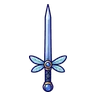
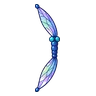

แมลงปอไพลิน
มอนธาตุลม Lv 14–24
เจอที่
| แมพ | โซน | Lv | ภูมิภาค |
|---|---|---|---|
| บึงกบลำธารใส | 16–24 | ป่ากองไฟ | |
| บึงกบลำธารใส | บึงบัวใหญ่ | 20–24 | ป่ากองไฟ |
| เขื่อนบีเวอร์ร้าง | 14–24 | ป่ากองไฟ | |
| เขื่อนบีเวอร์ร้าง | เขื่อนท่อนไม้ใหญ่ | 21–24 | ป่ากองไฟ |
| ดงกกท่วมหัว | 14–24 | ป่ากองไฟ | |
| ดงกกท่วมหัว | ซุ้มซ่อนล่าเป็ด | 21–24 | ป่ากองไฟ |
| กระท่อมรมควันปลาไหล | 14–24 | ป่ากองไฟ | |
| กระท่อมรมควันปลาไหล | โรงรมควันริมน้ำ | 21–24 | ป่ากองไฟ |
| หอรากมืด (Dark Root) | รังผีเสื้อกลางคืน | 52–61 |
ค่าสถานะตามเลเวล
| Lv | HP | ATK | DEF | MDEF | EXP | Job |
|---|---|---|---|---|---|---|
| 14 | 1,106 | 28–42 | 3 | 3 | 21 | 16 |
| 19 | 1,365 | 35–52 | 4 | 4 | 26 | 20 |
| 24 | 1,381 | 37–55 | 5 | 5 | 31 | 23 |
ตีด้วยธาตุไหนดี
แรงขึ้น: ดิน ×1.5 พิษ ×1.25
เบาลง: น้ำ ×0.5 ลม ×0.25
วัตถุดิบที่ดรอป
| ของ | โอกาส | |
|---|---|---|
| ปีกแมลงปอใส | 55% | 1 ชิ้น (15% ได้ 2) |
อุปกรณ์ที่ดรอป (8)
| ของ | โอกาส |
|---|---|
| ชุดแมลงปอ (เสื้อ) | 0.15% |
| ชุดแมลงปอ (กางเกง + รองเท้า) | 0.15% |
| 0.12% | |
| 0.12% | |
 ดาบแทงปีกแมลงปอ | 0.12% |
 ธนูปีกแมลงปอ | 0.06% |
| 0.06% | |
| ชุดแมลงปอ (แว่นกันลมแมลงปอ) | 0.05% |
สกิล
หลบ (Lv 25+) · หลบ (Lv 60+) · วาร์ป (Lv 60+)